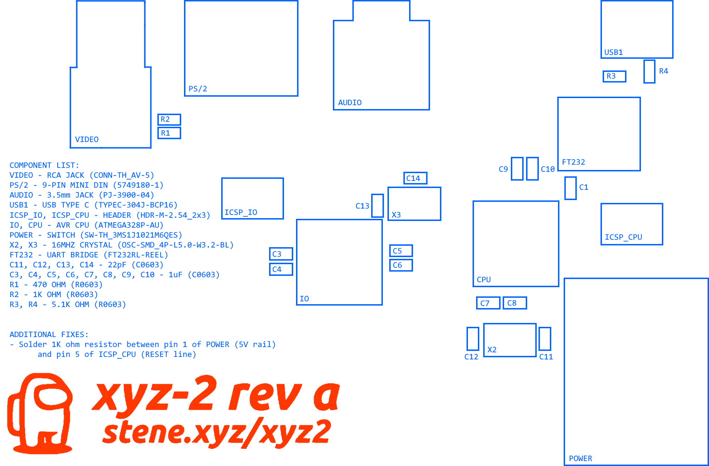

xyz-2
minimal computer
about
the xyz-2 is a small, low-cost (~30 USD) hobby computer inspired by early home computers.
specs
the xyz-2 has two atmega328p-au processors (one for i/o, and one for running the os),
composite (NTSC) video, a 3.5mm headphone jack, and a PS/2 keyboard port. it uses a
type-c port for power and for updating firmware on the main cpu (after being flashed
with an Arduino bootloader) although updating firmware on the i/o controller requires
an ICSP programmer.
hardware design
the design files are available below.
Revision A

Gerber files (ZIP)
Board layout (in both PNG and PDN)
EasyEDA board design file (JSON)
Schematic (PDF)
Bill of Materials (CSV)
Board layers (PDF)